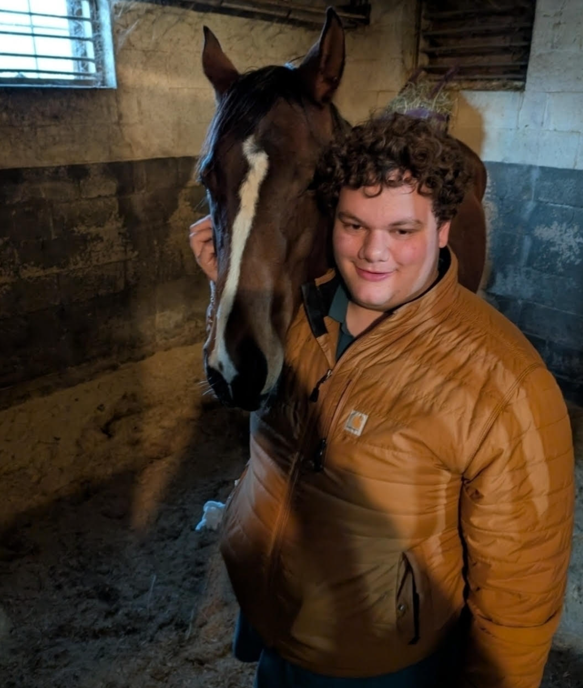

Electrical Engineering & Mathematics
Building research-driven systems across signals, hardware, and intelligent computing.
I am Maxwell Morrison, a University of Delaware student pursuing electrical engineering and mathematics. My work centers on signal processing, embedded systems, machine learning, and practical engineering tools that turn complex data into useful decisions.

Research
Undergraduate researcher in computational neural information engineering and acoustic sensing.
Instruction
Teaching and lab support for digital logic and analog circuits at the University of Delaware.
Engineering
Project experience across drone detection, fire modeling, health tools, and custom hardware.